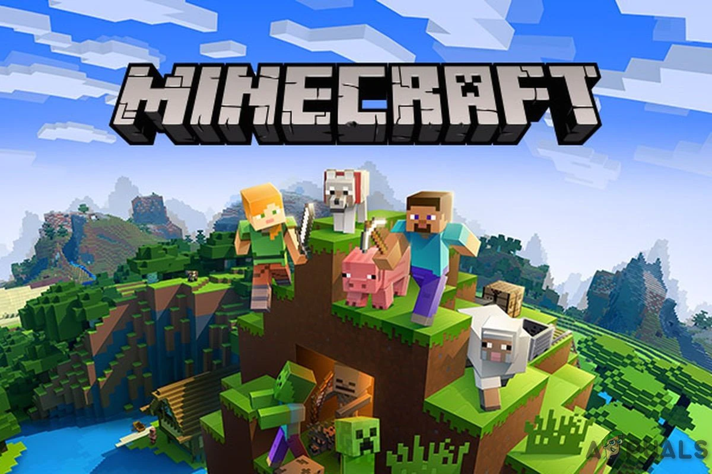
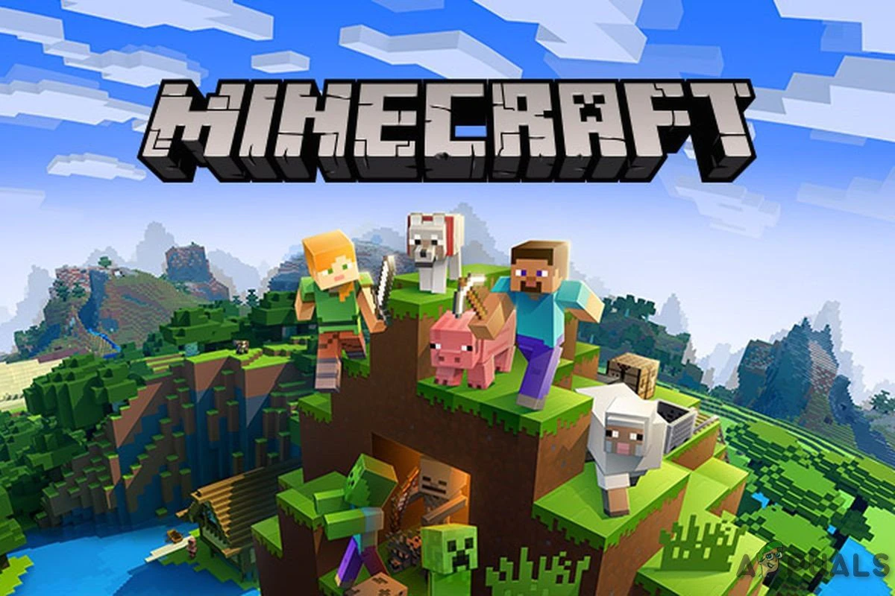
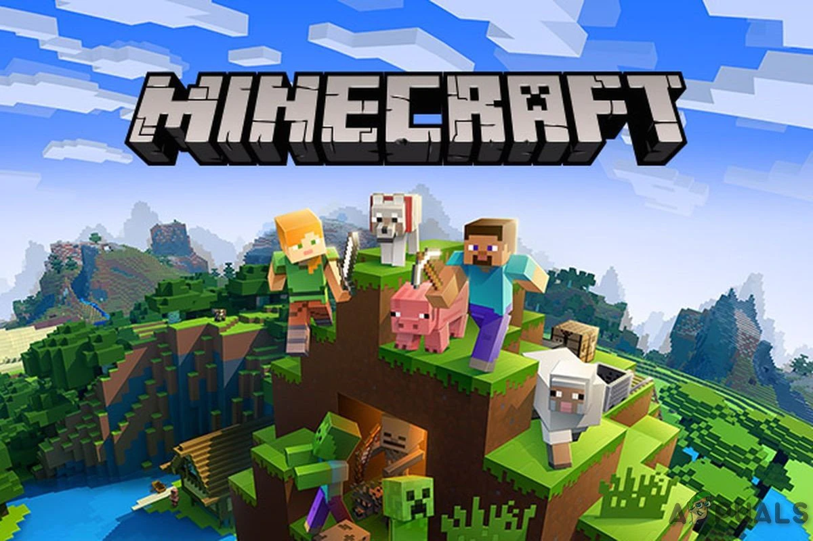

Мир Майнкрафта полностью состоит из квадратных блоков и генерируется случайным образом. При запуске игрок оказывается в случайном месте на карте, как правило, ощущая себя достаточно безоружным и дезориентированным. Для начала будет полезным воспользоваться тем фактом, что то место, где появился игрок — это точка респауна, а точнее даже область в 20 блоков. Именно здесь игрок появится вновь, если вдруг его персонаж будет убит. Исходя из этого следует каким-то образом запомнить или даже пометить это место. Сделать это можно, например, вычертив буку Х на земле, или построив столбик из блоков. Чтобы разрушить блок, нужно навести на него и нажать левую кнопку мыши. Разрушенный блок можно подобрать и положить в инвентарь. В дальнейшем из найденных ресурсов можно создавать инструменты, строить и даже готовить. Но об этом позже, а сейчас следует собрать несколько блоков земли и выстроить из них столбик.
